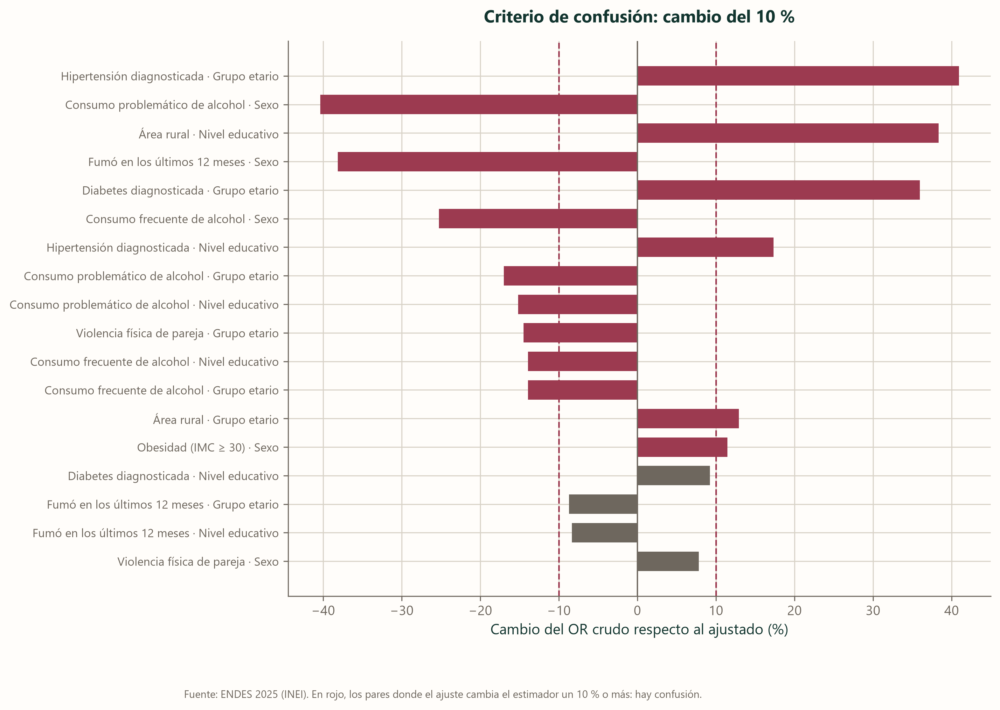
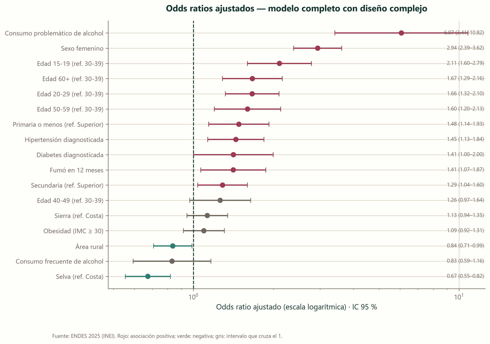

Qué se asocia con la depresión
A primera vista, los datos parecen decir que fumar protege contra la depresión. La cifra es real y la conclusión no lo es, y entender por qué es el mejor ejemplo que tenemos de cómo una comparación sencilla puede llevarnos a una conclusión que los datos no respaldan.
La paradoja del tabaco
Si se comparan, sin más, las personas que fumaron en el último año con las que no, la comparación sin ajustar sugiere que fumar protege. En la muestra sin ponderar, el 5,1 % de quienes fumaron dio positivo en el tamizaje, frente al 7,0 % de quienes no fumaron (odds ratio 0,72; IC 95 % 0,63 a 0,83). Con los pesos de la encuesta la diferencia se reduce a 6,1 % frente a 6,8 %, con un odds ratio sin ajustar de 0,83 cuyo intervalo (0,66 a 1,05) ya incluye al 1. La prueba de Rao y Scott, que respeta el diseño muestral, tampoco la sostiene (p = 0,113). En otras palabras, la comparación sin ajustar no demuestra ninguna protección, aunque sí nos invita a mirar en esa dirección.
Ahora fijémonos en quién fuma. En nuestra muestra fumó en el último año el 26,6 % de los hombres y el 5,9 % de las mujeres, y las mujeres presentan más del doble de sintomatología depresiva que los hombres. Al comparar fumadores con no fumadores estamos comparando, en buena medida, hombres con mujeres.
Cuando la comparación se hace dentro de cada sexo, el resultado se da la vuelta. El odds ratio ajustado por sexo con el método de Mantel y Haenszel es 1,17 (IC 95 % 1,01 a 1,36), y en el modelo completo, con el diseño de la encuesta, llega a 1,41 (IC 95 % 1,07 a 1,87). Fumar se asocia con más sintomatología, no con menos. Es coherente con lo que se ha encontrado en otros estudios, aunque la literatura longitudinal es menos clara sobre el sentido de la relación: hay trabajos que van del tabaco a la depresión y otros que van de la depresión al tabaco (Fluharty et al., 2017).
Ajustar no es un trámite: en algunos casos cambia el signo del resultado
Antes de comparar dos grupos conviene descontar aquello que los diferencia por otras razones. Cada barra corresponde a un factor y a una variable que podía distorsionar su medición, como la edad o el sexo, y su longitud dice cuánto se mueve el resultado al descontarla: mientras más larga, más distorsionaba la comparación sin ajustar. El 10 % es el umbral convencional, y por debajo de él se considera que la distorsión no era relevante. Muchas barras lo superan: la hipertensión cambia un 41 % al tener en cuenta la edad, y el consumo problemático de alcohol un 40 % al tener en cuenta el sexo.

El panorama completo
El consumo problemático de alcohol tiene la asociación más fuerte del modelo
La línea vertical punteada marca el 1, donde no hay asociación. Un punto a la derecha indica que la sintomatología es más frecuente con ese factor y uno a la izquierda, que lo es menos; la línea horizontal de cada punto es su margen de error, y si cruza el 1, los datos no permiten afirmar que exista asociación. Con un odds ratio ajustado de 6,07 (una razón de prevalencias ajustada de 4,80), el consumo problemático de alcohol es el factor de mayor fuerza, por delante del sexo femenino (2,94). Vivir en la selva aparece del otro lado, con menos sintomatología que vivir en la costa. Los puntos grises son los que no permiten concluir nada, justamente porque su intervalo incluye el valor sin asociación. La sección 10 compara cada una de estas asociaciones con lo que se ha publicado.

Cuándo una asociación no es igual para todos
Con 30 000 observaciones, las pruebas estadísticas detectan diferencias muy pequeñas. De las 30 combinaciones que examinamos, 13 salían «significativas», y eso no quiere decir que las 13 sean relevantes.
Por eso pedimos tres condiciones a la vez: que la diferencia siga siendo significativa tras corregir por el número de pruebas, que los odds ratios de los dos grupos difieran al menos vez y media, y que ambos grupos tengan casos suficientes. Sobreviven 3.
| Exposición | Difiere según | Cuánto difieren | Casos en la celda más pequeña | p corregido |
|---|---|---|---|---|
| Fumó en 12 meses | Sexo | 1.97 | 110 | 0.00 |
| Obesidad (IMC ≥ 30) | Sexo | 1.54 | 69 | 0.01 |
| Hipertensión diagnosticada | Nivel educativo | 1.96 | 35 | 0.02 |